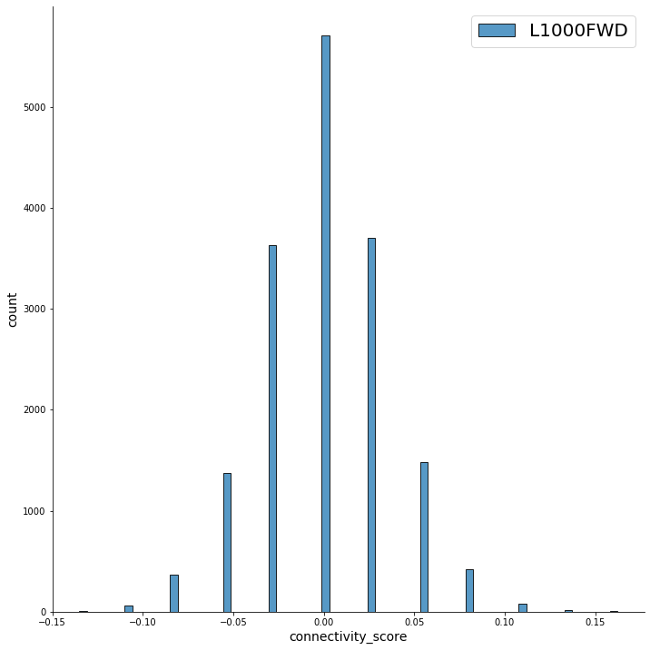
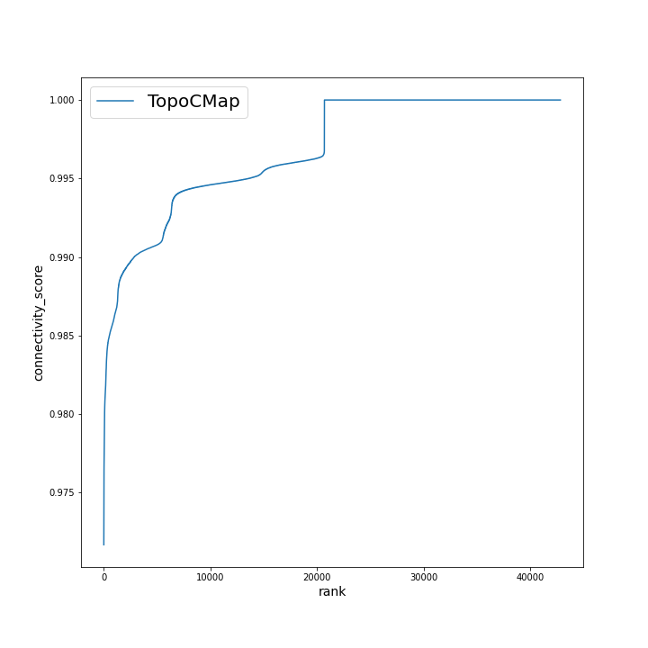
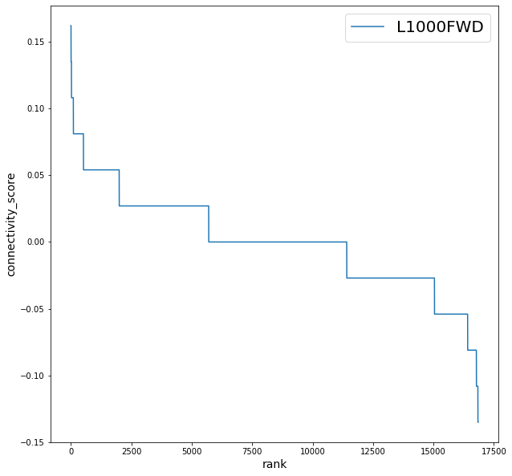
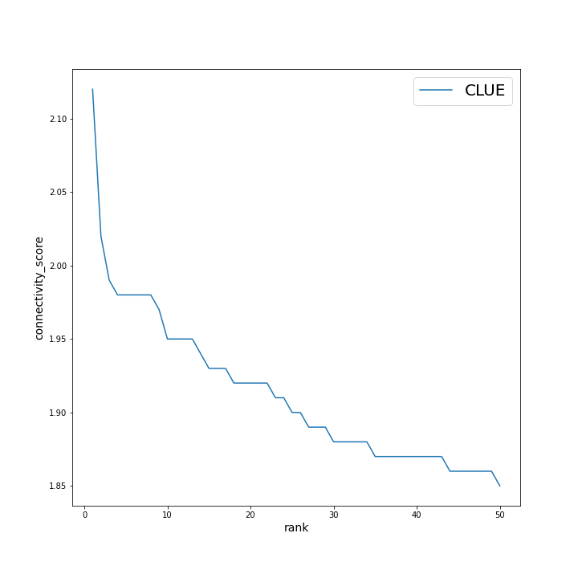
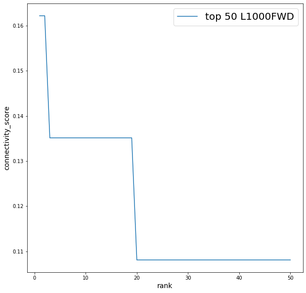

Для анализа сигнатур с помощью метода Connectivity Map существуют различные инструменты, каждый из которых использует свою уникальную метрику для нахождения сходства между сигнатурой запроса и сигнатурам из базы данных. Далее будут коротко описаный каждая из метрик, распределние которых представлены на рисунках ниже.
TopoCMap: Оценка сходства считается как косинусное расстояние между генными векторами сигнатуры за-проса с аналогичными векторами для сигнатуры из базы данных, усредненное для каждой пары.
CLUE:Взвешенная оценка связности (WTCS) представляет собой непараметрическую меру сходства, осно-ванную на взвешенной статистике обогащения (ES) Колмогорова-Смирнова. WTCS - это составнаядвунаправленная версия ES.WTCS находится в диа-пазоне от -1 до 1. Он будет положительным для сигнатур, которые связаны положительно, и от-рицательным для сигнатур, которые связаны обратно, и близким к нулю для сигнатур, которые несвязаны друг с другом. Ноль присваивается в том случае, когда и ESup, и ESdown имеют один итот же знак. Также для возможности сравнения такого скора по клеточным линиям производится нормализация, тонкости которой здесь будут опущены.
iLINCS: При загрузке сигнатуры со значениями logFCи p-value связность со всеми сигнатурами iLINCS вычисляется как взвешенная корреляция между двумя векторами значений logFC и вектором весов, равным [−log10(p-value сигнатуры запроса)−log10(p-value сигнатуры iLINCS)]. Когда загруженная сигнатура состоит только из значений logFC без p-value, вектор весов корреляции основан только на p-value сигнатур iLINCS: [−log10(p-value сигнатур iLINCS)].
L1000FWD: Оценка сходства считается как пересечение списков генов с повышенной и пониженной экспрессией сигнатуры запроса с аналогичными списками генов для сигнатуры из базы данных, деленное на "эффективный ввод". "Эффективный ввод"расчитывается как число общих генов для входных списков и генов из L1000. Для оценки статистической значимости пересечения списков генов сигнатуры запроса со списками сигнатуры базы данных используется точный тест Фишера. Для каждой сигнатуры запроса вычисяется уровень сходства с сигнатурой из базы данных. Затем для значения сходсва исходной сигнатуры запроса с сигнатурой из базы данных вычисляется z-score на основе полученной выборки оценок сходства. Рассчитанные метрики комбинируются следующим образом:c = z * log10(p)
| a | |
b | |
c | |
d |  |
Распределение значений connectivity score для: (a) TopoCMap; (b) CLUE; (c) iLINCS; (d) L1000FWD.
| a |  |
b |  |
c | |
d |  |
Распределение значений connectivity score для CLUE после фильтрации неактивных соединений: (a) TopoCMap; (b) CLUE; (c) iLINCS; (d) L1000FWD.
| a |  |
b |  |
c |  |
d |  |
Распределение значений connectivity score для top50: (a) TopoCMap; (b) CLUE; (c) iLINCS; (d) L1000FWD.
| a |  | b | |
c | |
d |  |
Зависимость connectivity score от ранга сигнатуры для: (a) TopoCMap; (b) CLUE; (c) iLINCS; (d) L1000FWD.
| a | |
b |  | c | |
d |  |
Зависимость connectivity score от ранга сигнатуры для top50 (a) TopoCMap; (b) CLUE; (c) iLINCS; (d) L1000FWD.